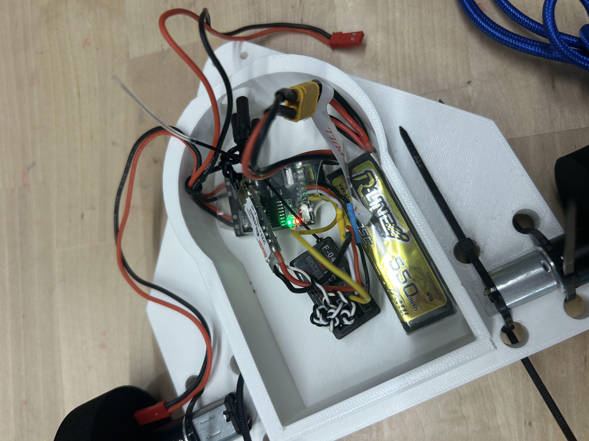
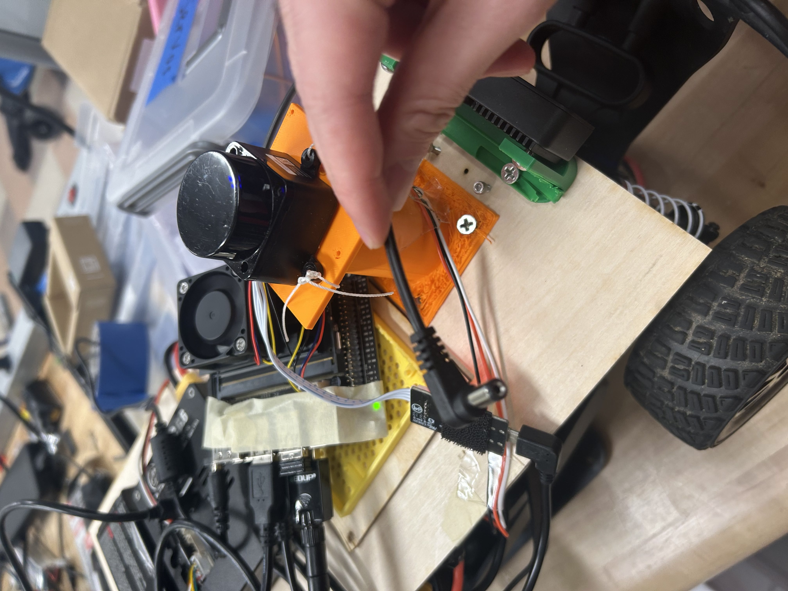

The Combat Robot I made was part of the combat robotics club. I learned many important skills form there, such as how to solder and 3d print.
Currently there is a recent competitoin where people get to go to UC Irvine and compete their combat robo with other students from there. While I was unable to go because I am busy with college work, I want people to check it out.
This is shameless advertising, please come if you are tired of web development

This robot is a autonomous robot that was created to make 3 automous laps by itself.
Our team plans to implement GPS laps and laps involving ROS code for this autonomous robot.
